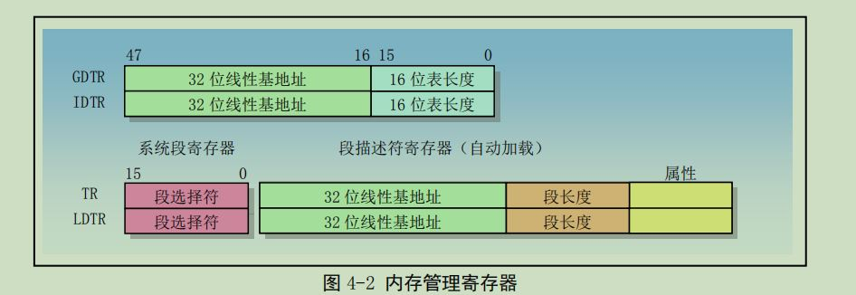
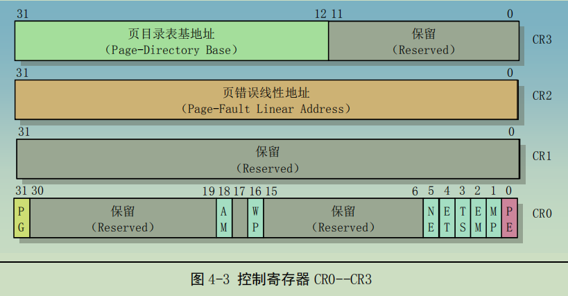
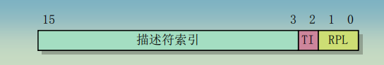

保护模式
20位实模式下，寻址一个内存地址主要使用段基地址和段内偏移值，前者存放在段寄存器中，后者存放在任何一个可用于寻址的寄存器中，且由于寄存器大小为16位，即段内偏移值最大为2^16B=64KB，说明段的大小固定为64KB. 32位保护模式内存寻址机制见3.2.1分段机制
1. 内存管理寄存器

GDTR、LDTR、IDTR 和 TR 都是段基址寄存器:
- GDTR: 全局描述符寄存器，基地址指定GDT 表在线性地址空间中的起始地址，表长度指明 GDT 表的字节长度值。指令 LGDT 和 SGDT 分别用于加载和保存 GDTR 寄存器的内容。
- IDTR: 中断描述符表寄存器，存放中断描述符表 IDT 的 32 位线性基地址和 16 位表长度值。指令 LIDT 和 SIDT 分别用于加载和保存 IDTR 寄存器的内容。
- LDTR: 存放局部描述符表 LDT 的 32 位线性基地址、16 位段限长和描述符属性值；指令LLDT 和 SLDT 分别用于加载和保存 LDTR 寄存器的段描述符部分。 包含 LDT 表的段必须在 GDT 表中有一个段描述符项。当使用 LLDT 指令把含有 LDT 表段的选择符加载进 LDTR 时，LDT 段描述符的段基地址、段限长度以及描述符属性会被自动地加载到 LDTR 中。当进行任务切换时，处理器会把新任务 LDT的段选择符和段描述符自动地加载进 LDTR 中。
- TR: 任务寄存器，它引用 GDT 表中的一个 TSS 类型的描述符。指令 LTR 和 STR 分别用于加载和保存 TR 寄存器的段选择符部分。当使用 LTR 指令把选择符加载进任务寄存器时，TSS 描述符中的段基地址、段限长度以及描述符属性会被自动地加载到任务寄存器中。当执行任务切换时，处理器会把新任务的 TSS 的段选择符和段描述符自动地加载进任务寄存器 TR 中。
事实上，由于切换TSS，需要耗费许多时间在保存于赋值上，后来的linux系统采用切换内核栈来恢复和保存寄存器中的值。
2.控制寄存器

CR0 中含有控制处理器操作模式和状态的系统控制标志， 其中CR0中的保护控制位：
- PE：CR0 的位 0 是启用保护（Protection Enable）标志。当设置该位时即开启了保护模式；当复位时即进入实地址模式。
- PG：CR0 的位 31 是分页（Paging）标志。当设置该位时即开启了分页机制；当复位时则禁止分页机制，此时所有线性地址等同于物理地址。在开启这个标志之前必须已经或者同时开启 PE 标志。即若要启用分页机制，那么 PE 和 PG 标志都要置位。在修改了 PE 位之后程序必须立刻使用一条跳转指令，以刷新处理器执行管道中已经获取的不同模式下的任何指令。在设置 PE 位之前，程序必须初始化几个系统段和控制寄存器。
CR2 和 CR3 用于分页机制:
- CR3含有存放页目录表页面的物理地址，因此 CR3 也被称为 PDBR。因为页目录表页面是页对齐的，所以该寄存器只有高 20 位是有效的，且CR3 中加载一个新值时低12位必须置0。
- CR2用于出现页异常时报告出错信息。在报告页异常时，处理器会把引起异常的线性地址存放在 CR2中。因此操作系统中的页异常处理程序可以通过检查 CR2 的内容来确定线性地存中读取页表项时，地址空间中哪一个页面引发了异常。
- 使用 MOV 指令加载 CR3 时具有让页高速缓冲无效的副作用。为了减少地址转换所要求的总线周期数量，最近访问的页目录和页表会被存放在处理器的页高速缓冲器件中(位于Cache中，查找速度高于内存)，该缓冲器件被称为转换查找缓冲区TLB（Translation Lookaside Buffer）。只有当 TLB 中不包含要求的页表项时才会使用额外的总线周期从内存中读取页表项。
3.保护模式内存管理
任何完整的内存管理系统都包含两个关键部分：保护和地址变换。提供保护措施可以防止一个任务访 问另一个任务或操作系统的内存区域。地址变换能够让操作系统在给任务分配内存时具有灵活性，并且因 为我们可以让某些物理地址不被任何逻辑地址所映射，所以在地址变换过程中同时也提供了内存保护功能。 80x86CPU 采用的是小端对齐(值的低位存放在地址低位)
3.1 内存寻址
段地址部分使用 16 位的段选择符指定，其中 14 位可以选择 2^14 次方即 16384(即16K) 个段。段内偏移地址部分使用 32 位的值来指定，因此段内地址可以是 0 到 4G。即一个段的最大长度可达 4G。程序中由 16 位的段和 32 位的偏移构成的 48 位地址或长指针称为一个逻辑地址（虚拟地址）。它唯一确定了一个数据对象的段地址和段内偏移地址。
。在任何指定时刻由 CS 寻址的段称为当前代码段。此时EIP 寄存器中包含了当前代码段内下一条要执行指令的段内偏移地址。因此要执行指令的地址可表示成CS:[EIP]。可以通过段间控制转移命令为CS和EIP赋新值，从而可以把执行位置改变到
其他的代码段中，这样就实现了在不同段中程序的控制传递。
eg：cs中存放8，即00000000000000000000000000000100b，则对应GDT表开始的地址为8的代码，因为此时索引为1(在 80X86 CPU中，段寄存器中的值右移 3 位即是描述符表中一个描述符的索引值。)，而一个段描述符大小为8B，则索引1的段起始地址即为8。
3.2 地址变换
计算机中的物理内存是字节的线性数组，每个字节具有一个唯一的物理地址；程序中的地址是由段选择符和段偏移量两部分构成的虚拟地址; 逻辑地址是指由程序产生的与段相关的偏移地址部分（通常不区分虚拟地址和逻辑地址，统称为逻辑地址）; 物理地址是CPU 外部地址总线上的寻址物理内存的地址信号。
逻辑地址并不能直接用于访问物理内存，而需要使用地址变换机制将它变换或映射到物理内存地址上。内存管理机制即用于将这种逻辑地址转换成物理内存地址。为了减少确定地址变换所需要的信息，变换或映射通常以内存块作为操作单位。分段机制和分页机制 是两种广泛使用的地址变换技术。分段和分页操作都使用驻留在内存中的表(GDT/LDT与页表)来指定它们各自的变换信
息。这些表只能由操作系统访问，以防止应用程序擅自修改。
3.2.1 分段机制
分段机制可以把处理器可寻址的线性地址空间划分成一些较小的称为段的受保护地址空间区域。段可以用来存放程序的代码、数据和堆栈，或者用来存放系统数据结构（例如 TSS或 LDT）。如果处理器中有多个程序或任务在运行，那么每个程序可分配各自的一套段。因此多个程序（或任务）可以运行在同一个处理器上而不会互相干扰。
一个系统中所有使用的段都包含在处理器线性地址空间中。为了定位指定段中的一个字节，程序必须提供一个逻辑地址。逻辑地址包括一个段选择符和一个偏移量。段选择符是一个段的唯一标识。段选择符是提段描述符表（例如全局描述符表 GDT中一个数据结构，称为段描述符）中某一描述符项在表中的索引值。索引值指定的段描述符项中含有需要寻址的内存段的段基地址、段的长度值、段的访问特权级、段类型。逻辑地址的偏移量部分加到段的基地址上就可以定位内存中段中某个字节的位置。因此基地址加上偏移量就形成了处理器线性地址空间中的地址。
3.2.2 分页机制
分页机制为传统需求页、虚拟内存系统提供了实现机制。其中虚拟内存系统用于实现程序代码按要求映射到物理内存中。
使用虚拟存储技术。虚拟存储是一种内存管理技术，使用这种技术可让编程人员产生内存空间要比计算机中实际物理内存容量大很多的错觉。在使用虚拟存储的环境中，大容量的线性地址空间需要使用小块的物理内存（RAM 或 ROM）以及某些外部存储空间（例如大容量硬盘）来模拟。当使用分页时，每个段被划分成页面（通常每页为 4KB 大小），页面会被存储于物理内存中或硬盘上。操作系统通过维护一个页目录和一些页表来留意这些页面。当程序（或任务）试图访问线性地址空间中的一个地址位置时，处理器就会使用页目录和页表把线性地址转换成一个物理地址，然后在该内存位置上执行所要求的操作（读或写）。
如果当前被访问的页面不在物理内存中，处理器就会中断程序的执行（通过产生一个页错误异常）。然后操作系统就可以从硬盘上把该页面读入物理内存中，并继续执行刚才被中断的程序。
虚拟内存好处: 虚拟内存管理可以控制物理内存的访问权限，访问的虚拟页若没有权限，则触发一个保护异常，终止进程；虚拟内存让每个进程都有独立的地址空间；虚拟地址到物理地址的映射会给分配和释放内存带来方便，物理内存不连续的地址可以由连续的虚拟地址映射得到；内存效率高，使用页面调度，不会造成大量得数据装入内存。
3.2.2 两种机制区别
- 分页使用了固定长度的页面。
段的长度通常与存放在其中的代码或数据结构具有相同的长度。与段不同，页面有固定的长度。如果仅使用分段地址转换，那么存储在物理内存中的一个数据结构将包含其所有的部分。但如果使用了分页，那么一个数据结构就可以一部分存储于物理内存中，而另一部分保存在磁盘中。 - 段表存储在线性地址空间，而页表则保存在物理地址空间。
段变换表可由分页机制重新定位而无需段机制的信息或合作。段变换机制把虚拟地址（逻辑地址）变换成线性地址，并且在线性地址空间中访问自己的表，但是并不知晓分页机制把这些线性地址转换到物理地址的过程。类似地，分页机制也不知道程序产生地址的虚拟地址空间。分页机制只是简单地把线性地址转换成物理地址，并且在物理内存中访问自己的转换表。
3.3 保护
3.3.1 任务间保护
通过给每个任务不同的虚拟地址（逻辑地址）空间来完全隔离各个任务。其实现原理是向每个任务提供不同的逻辑地址到物理地址的变换映射。只需给每个任务各自独立的映射表，每个任务就会有不同的地址变换函数。在 80X86 中，每个任务都有自己的段表和页表。当处理器切换去执行一个新任务时，任务切换的关键部分就是切换到新任务的变换表。
通过在所有任务中安排具有相同的虚拟到物理地址映射部分，并且把操作系统存储在这个公共的虚拟地址空间部分，操作系统可以被所有任务共享。这个所有任务都具有的相同虚拟地址空间部分被称为全局地址空间（Global address space）。每个任务唯一的虚拟地址空间部分被称为局部地址空间（Local address space）。局部地址空间含有需要与系统中其他任务区别开的私有的代码和数据。由于每个任务中具有不同的局部地址空间，因此两个不同任务中对相同虚拟地址处的引用将转换到不同的物理地址处。所有任务在全局地址空间中对相同虚拟地址的引用将被转换到同一个物理地址处。这给公共代码和数据（例如操作系统）的共享提供了支持。
虚拟地址（逻辑地址）空间可包含最多 16K 的段(2^14,，16位的段选择符中只有高14位可以用来选择)，而每个段最长可达 4GB（32位偏移地址），使得虚拟地址空间容量达到 64TB（246KB）。线性地址空间和物理地址空间都是 4GB（2^32KB，32位地址总线）。实际上，如果禁用分页机制，那么线性地址空间就是物理地址空间。
虚拟地址空间被分割成大小相等的两半（各自2^13个段）。一半由 GDT 来映射变换到线性地址，另一半则由 LDT 来映射。
当发生任务切换时，LDT 会更换成新任务的 LDT，但是 GDT 并不会改变。因此，GDT 所映射的一半虚拟地址空间是系统中所有任务共有的，但是 LDT 所映射的另一半则在任务切换时被改变。系统中所有任务共享的段由 GDT 来映射。
3.3.2 特权级保护
保护机制对任务进行操作，以保护操作系统内存段和处理器特殊系统寄存器不被应用程序访问。
在一个任务中，定义了 4 个执行特权级（Privilege Levels），用于依据段中含有数据的敏感度以及任务中不同程序部分的受信程度，来限制对任务中各段的访问。最敏感的数据被赋予了最高特权级，它们只能被任务中最受信任的部分访问。不太敏感的数据被赋予较低的特权级，它们可以被任务中较低特权级的代码访问。特权级用数字 0 到 3 表示，0 具有最高特权级，3是最低特权级。
4. 分段机制
4.1 段选择符

TI=0 表示描述符在 GDT 中；TI=1 表示描述符在 LDT 中。索引字段给出了描述符在 GDT 或 LDT 表中的索引项号。RPL(Request Privilege Level)，请求特权级。
4.2 段描述符
颗粒度G：G=0，段限长单位是1B，G=1单位是4KB.
段类型TYPE:
S=1，代码或数据
S=0，系统
描述符第10位C代表一致性标志:
C=1，一致性段：操作系统拿出来被共享的代码段,可以被低特权级的用户直接调用访问的代码.要求CPL >= DPL。故特权级高的程序不能访问特权级低的程序。当CPL<DPL时，会产生一般保护异常。
C=0，非一致性段：为了避免低特权级的访问而被操作系统保护起来的系统代码（DPL=0），只允许同级访问，即CPL=DPL，且RPL<=CPL。
4.3 特权级
- 当前特权级CPL（Current Privilege Level）: CPL 是当前正在执行程序或任务的特权级。它存放在CS 和 SS 段寄存器的位 0 和位 1 中。通常，CPL 等于当前代码段的特权级。当程序把控制转移到另一个具有不同特权级的代码段中时，处理器就会改变 CPL。当访问一个一致性（conforming）代码段时，则处理器对 CPL 的设置有些不同。特权级值高于（即低特权级）或等于一致代码段DPL 的任何段都可以访问一致代码段。并且当处理器访问一个特权级不同于 CPL 的一致代码段时，CPL 并不会被修改成一致代码段的 DPL。
- 描述符特权级DPL（Descriptor Privilege Level）: DPL 是一个段或门的特权级。它存放在段或门描 述符的 DPL 字段中。在当前执行代码段试图访问一个段或门时，段或门的 DPL 会用来与 CPL 以及段或门选择符中的 RPL（见下面说明）作比较。
- 请求特权级RPL（Request Privilege Level）：RPL 是一种赋予段选择符的超越特权级，它存放在段选择符的位 0 和位 1 中。处理器会同时检查 RPL 和 CPL，以确定是否允许访问一个段。即使程序或任务具有足够的特权级（CPL）来访问一个段，但是如果提供的 RPL 特权级不足的话访问也将被拒绝。RPL 可用来确保高特权级的代码不会代表应用程序去访问一个段，除非应用程序自己具有访问这个段的权限。
当代码试图访问一个段或门（调用门）时，要求 DPL >= max{CPL, RPL}。
5. 分页机制
80X86 使用 4K（2^12）字节固定大小的页面。每个页面均是 4KB，并且对齐于 4K 地址边界处。这表 示分页机制把 2^32字节（4GB）的线性地址空间划分成 2^20（1M = 1048576）个页面。分页机制通过把线性 地址空间中的页面重新定位到物理地址空间中进行操作。由于 4K 大小的页面作为一个单元进行映射，并 且对齐于 4K 边界，因此 线性地址的低 12 比特位可作为页内偏移量直接作为物理地址的低 12 位。分页机制执行的重定位功能可以看作是把线性地址的高 20 位转换到对应物理地址的高 20 位。
5.1 两级页表结构
页表含有 2^20（1M）个表项，而每项占用 4 字节。如果作为一个表来存放的话，它们最多将占用 连续4MB 的内存(逻辑地址中提供的页表的索引值，只有是连续内存，且每个表项大小固定，才可以根据首地址和索引计算任意表项的地址)。因此为了减少连续内存占用量，80X86 使用了两级表。
第一级表称为页目录，线性地址的最高 10 位（位 31--22）用作一级表（页目录）中的索引值，来选择2 ^10个二级表之一。 因此一个页目录项所能寻找的地址空间大小为4MB（=2^10页 * 4KB）.
第二级表称为页表(page table)，二级页表使用线性地址中间 10 位（位 21--12）作为表项索引值，以获取含有页面 20 位物理基地址的表项。
一个页面大小为4KB，正好可以装下页目录(2^104B=4KB)，而一个二级页表包含2^10个页表项，总的大小也为4KB，也可以放在一个页面中。这样仅需两个页面(8KB)大小即可寻址
通过二级表结构事实上并没有解决需要使用4MB内存来存放页表的问题，但是其允许页表被分散在内存中各个页面中，而非保存在连续的4MB内存块中，并且不需要为不存在的或线性地址空间未使用的部分分配二级页表*。虽然目录表页面必须总是存在于物理内存中，但是二级页表可以在需要时再分配。这使得页表结构的大小对应于实际使用的线性地址空间大小。
页目录表和页表都包含一个存在属性P，前者指明对应的二级页表是否存在，后者指明页面是否存在；页目录/页表中每个表项大小为 32 位，只需要其中的 20 位来存放 页表的索引/页面的物理基地址，剩下的 12位可用于存放一些属性信息。如果程序访问物理内存中不存在的页面，处理器就会产生一个缺页异常。此时操作系统就可以利用这个异常处理过程把缺少的页面从磁盘上调入物理内存中，并把相应物理地址存放在表项中。
6 保护
6.1 代码段之间转移控制时的特权级检查
- 程序控制转移指令
程序的控制转移使用指令 JMP、RET、INT 和 IRET 以及异常和中断机制来实现。JMP 或 CALL 指令可以利用以下四种方法之一来引用另外一个代码段：
- 目标操作数含有目标代码段的段选择符；
- 目标操作数指向一个调用门描述符，而该描述符中含有目标代码段的选择符；
- 目标操作数指向一个 TSS，而该 TSS 中含有目标代码段的选择符；
-
目标操作数指向一个任务门，该任务门指向一个 TSS，而该 TSS 中含有目标代码段的选择符；
-
门描述符
-
调用门（Call Gate）类型 TYPE=12
调用门用于在不同特权级之间实现受控的程序控制转移。它们通常仅用于使用特权级保护机制的操作; 系统中调用门描述符一般存放在GDT或LDT中，不能存放在IDT中。
为了访问调用门，我们需要为 CALL 或 JMP 指令的操作数提供一个远指针。该指针中的段选择符用于指定调用门，而指针的偏移值虽然需要但 CPU 并不会用它。该偏移值可以设置为任意值。
P=1代表段存在 -
陷阱门（Trap Gate）类型 TYPE=15, 存储在IDT中。
- 中断门（Interrupt Gate），类型 TYPE=14, 存储在IDT中。
-
任务门（Task Gate），类型 TYPE=5, 可存储在GDT\LDT\IDT中。
中断门与陷阱门唯一的区别在于处理器操作 EFLAGS 寄存器 IF 标志的方法。当通过中断门访问一个 异常或中断处理过程时，处理器会复位 IF 标志以防止其他中断干扰当前中断处理过程。随后的 IRET 指令 则会用保存在堆栈上的内容恢复 EFLAGS 寄存器的 IF 标志。而通过陷阱门访问处理过程并不会影响 IF 标 志。 -
堆栈切换(用户栈切换) 每当调用门用于把程序控制转移到一个更高级别的非一致性代码段时，CPU 会自动切换到目的代码段 特权级的堆栈去。执行栈切换操作的目的是为了防止高特权级程序由于栈空间不足而引起崩溃，同时也为 了防止低特权级程序通过共享的堆栈有意或无意地干扰高特权级的程序。
-
任务切换
TSS\TR寄存器\TSS描述符(任务门描述符): TSS(Task State Segment)是一块大小为104字节的内存，存储了大部分寄存器的值 TR寄存器存储了TSS的地址，大小，和TSS选择符(用以从GDT中定位TSS描述符) TSS描述符是GDT表中的一项，操作系统启动时，从TSS描述符中取值初始化TR寄存器
处理器可使用一下 4 种方式之一执行任务切换操作: - 当前任务对 GDT 中的 TSS 描述符执行 JMP 或 CALL 指令
- 当前任务对 GDT 或 LDT 中的任务门描述符执行 JMP 或 CALL 指令
- 中断或异常向量指向 IDT 表中的任务门描述符
- 当 EFLAGS 中的 NT 标志置位时当前任务执行 IRET 指令。
6.4 中断和异常向量
为了有助于处理异常和中断，每个需要被处理器进行特殊处理的处理器定义的异常和中断条件都被赋予了一个标识号，称为向量（vector）。处理器把赋予异常或中断的向量用作中断描述符表 IDT（Interrupt Descriptor Table）中的一个索引号，来定位一个异常或中断的处理程序入口点位置。
- 中断源：外部硬件中断和软件产生的中断
- 异常源：软件检测到的程序错误异常和软件产生的异常
中断描述符表 IDT（Interrupt Descriptor Table）将每个异常或中断向量分别与它们的处理过程联系起来。 与 GDT 和 LDT 表类似，IDT 也是由 8 字节长描述符组成的一个数组。与 GDT 不同的是，表中第 1 项可以包含描述符。
7. 补充
7.1 GDT
GDT的第一项规定总是空描述符：因为当LDTR寄存器为0时，指向的正是GDT中第一项，空描述符表明当前任务没有LDT。
7.2 IRET and RET
IRET 指令与 RET 指令类似，但 IRET 还会把保存的寄存器内容恢复到 EFLAGS 中。不过只有当 CPL 是 0 时才会恢复 EFLAGS 中的 IOPL 字段，并且只有当 CPL<=IOPL 时，IF 标志才会被改变。 如果当调用中断处理过程时发生了堆栈切换，那么在返回时 IRET 指令会切换回到原来的堆栈。
7.3 EFLAGS
- IOPL 特权级字段：两个位宽，保护模式下。指定了要求执行I/O指令的特权级，如果CPL<=IOPL，I/O指令可以执行，否则发生一个保护异常。
- NT 嵌套任务位：控制IRET指令的运行。如果NT=0，用栈中保存的值恢复EFLAGS、CS和EIP执行常规的中断返回。 如果NT=1，中断返回用一任务转换代替上述过程。
- 只有在特权级0下执行的程序才能改变VM及IOPL字段。IF位只能由具有I/O特权的程序所改变。